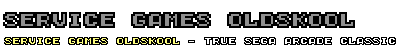

Service Games Oldskool
Truetype Font
Copyright (c) 2006 by ck! [Freaky Fonts].
All rights reserved.
The personal, non-commercial use of my font is free.
But donations are accepted and highly appreciated!
The use of my fonts for commercial and profit purposes is prohibited,
unless a small donation is sent to me.
Contact: www.freakyfonts.de
These font files may not be modified or renamed.
This readme file must be included with each font, unchanged.
Redistribute? Sure, but contact me first.
Visit .:Freaky Fonts:. for updates and more fonts (PC & MAC) :
www.freakyfonts.de
Thanks again to {ths} for the Mac conversion.
visit: www.ths.nu
Note:
Photoshop
use: Size 8 (& multiplier) - antialising turned off.
Paintshop
use: Size 6 (& multiplier) - antialising turned off.
Logo-Dingbat at $
All
trademarks are property of their respective owners.
More about: http://wikipedia.org/wiki/Sega